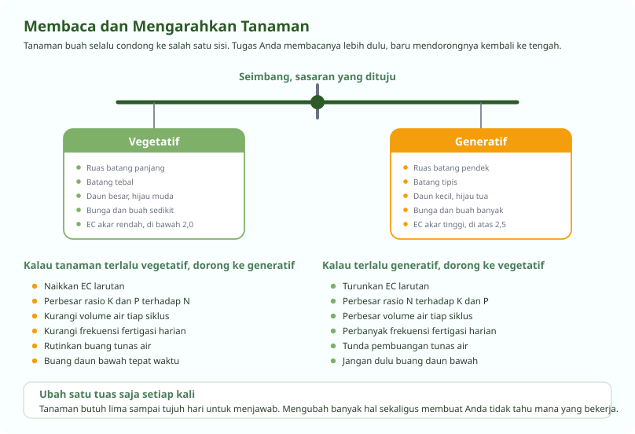

Tanaman Buah Harus Dibentuk, Bukan Dibiarkan
Yang dipangkas bukan yang rusak, melainkan yang berlebih
Tomat, paprika, terong, dan timun kalau dibiarkan akan tumbuh menjadi semak. Cabangnya banyak, daunnya rimbun, buahnya kecil-kecil dan matang tidak serentak. Semua energi terbagi ke terlalu banyak titik.
Membentuk tanaman berarti memutuskan sejak awal ke mana energi itu dialirkan. Ini pekerjaan rutin, bukan sesekali, dan bedanya terlihat jelas pada ukuran serta keseragaman buah.
Pemangkasan dan Penopang
Enam pekerjaan yang berulang sepanjang musim
-
Pasang ajir dan tali penopang sejak awal
Tanaman buah di greenhouse digantung pada tali yang diikat ke rangka atas, lalu dililitkan pada batang seiring pertumbuhannya. Memasangnya belakangan berarti batang sudah telanjur bengkok.
-
Tentukan jumlah cabang utama
Paprika dan cabai umumnya disisakan dua cabang. Tomat dan terong satu cabang. Sisanya dibuang selagi masih kecil, karena luka kecil menutup jauh lebih cepat.
-
Buang tunas air setiap hari
Tunas yang muncul di ketiak daun tomat tumbuh sangat cepat. Kalau dibiarkan seminggu, ia sudah menjadi cabang penuh dan membuangnya berarti melukai tanaman. Ini pekerjaan harian, bukan mingguan.
-
Jarangkan buah
Sisakan tiga sampai lima buah per dompol pada tomat, dan satu buah per ruas pada paprika. Buah yang terlalu banyak membuat semuanya kecil dan tidak ada yang mencapai ukuran layak jual.
-
Buang daun bawah pada waktunya
Daun di bawah dompol buah yang sudah tua tidak lagi menyumbang banyak. Membuangnya membuka aliran udara, mengurangi tempat sembunyi hama, dan mempercepat pematangan.
-
Turunkan tanaman ketika sudah mencapai atap
Tali dikendurkan dan batang direbahkan ke samping secara bertahap, sehingga pucuknya tetap berada pada ketinggian kerja. Dengan cara ini satu tanaman bisa berproduksi jauh lebih lama.
| Tanaman | Mulai sejak | Alasan utama |
|---|---|---|
| Tomat | Sekitar 1,5 bulan setelah pindah tanam | Mempercepat pematangan dan menyiapkan penurunan tanaman |
| Terong | Sekitar 2 bulan setelah pindah tanam | Membuka aliran udara dan mengurangi beban tanaman |
| Paprika | Sekitar 2 bulan setelah pindah tanam | Buah lebih terpapar cahaya sehingga warnanya rata |
Membaca dan Mengarahkan Pertumbuhan
Keterampilan yang membedakan petani berpengalaman
Tanaman buah selalu condong ke salah satu dari dua arah. Vegetatif berarti ia sedang sibuk membangun daun dan batang. Generatif berarti ia sedang sibuk membentuk bunga dan buah. Keduanya diperlukan, tetapi tidak boleh berlebihan.
Tanaman yang terlalu vegetatif tumbuh subur menghijau tetapi buahnya sedikit. Tanaman yang terlalu generatif berbuah lebat lalu kehabisan tenaga, batangnya menipis, dan akhirnya berhenti berproduksi. Tugas Anda menjaganya tetap di tengah.

Cara membacanya di lapangan
| Yang diamati | Condong vegetatif | Condong generatif |
|---|---|---|
| Jarak antar ruas | Panjang | Pendek |
| Ketebalan batang | Tebal | Tipis |
| Ukuran dan warna daun | Besar, hijau muda | Kecil, hijau tua |
| Jumlah bunga | Sedikit | Banyak |
| Ukuran buah | Besar tetapi jarang | Kecil tetapi banyak |
| EC di daerah akar | Rendah, di bawah 2,0 | Tinggi, di atas 2,5 |
Iklim di Dalam Greenhouse
Naungan, aliran udara, dan pembungaan
Paranet
| Kondisi | Paranet dibuka | Alasan |
|---|---|---|
| Musim kemarau | Pukul 09.00 sampai 14.00 | Suhu puncak paling lama |
| Hari normal | Pukul 11.00 sampai 13.00 | Hanya pada jam terpanas |
| Musim hujan | Dibiarkan terbuka | Cahaya sudah berkurang, tanaman butuh sisanya |
Paranet melindungi tanaman dari layu di siang hari, dari bolting yaitu selada yang terburu-buru berbunga, dan dari terbakarnya kulit buah karena sinar langsung. Ia juga menekan penguapan sehingga tanaman tidak kehilangan air lebih cepat daripada akar bisa menyerapnya.
Aliran udara
Buka jendela samping greenhouse pada pagi hari agar udara lembap semalaman terganti. Kelembapan yang tertahan adalah undangan terbuka untuk embun tepung dan bercak daun.
Membuang daun bawah dan menjaga jarak tanam sama pentingnya dengan membuka jendela. Udara harus bisa lewat di antara tanaman, bukan hanya di atasnya.
Membantu pembungaan
Di greenhouse tertutup, serangga penyerbuk tidak masuk. Untuk tomat dan terong, bunga perlu dibantu, baik dengan menggetarkan tali penopang setiap pagi maupun dengan zat perangsang pembuahan.
Kalau memakai zat perangsang, waktunya sekitar pukul sembilan pagi ketika bunga sedang mekar penuh, dan diulang selang sehari. Ikuti anjuran pada kemasan, karena dosis berlebih menghasilkan buah cacat tanpa biji.
Pertanyaan Seputar Modul Ini
Yang paling sering ditanyakan peserta
Kenapa tunas air pada tomat harus dibuang setiap hari?
Tunas air tumbuh di ketiak daun dan berkembang sangat cepat. Kalau dibiarkan seminggu, ia sudah menjadi cabang penuh yang mengambil energi dari buah, dan membuangnya berarti membuat luka besar yang menjadi pintu masuk penyakit.
Dibuang setiap hari selagi masih sepanjang beberapa sentimeter, lukanya kecil dan menutup dalam hitungan jam. Ini pekerjaan lima menit yang menentukan ukuran buah Anda.
Berapa cabang yang sebaiknya disisakan pada paprika dan tomat?
Paprika dan cabai umumnya disisakan dua cabang utama, sedangkan tomat dan terong satu cabang. Sisanya dibuang selagi masih kecil.
Untuk buahnya, tomat disisakan tiga sampai lima buah per dompol, dan paprika satu buah per ruas. Membiarkan semua buah tumbuh membuat semuanya kecil dan tidak ada yang mencapai ukuran layak jual.
Apa maksudnya menurunkan tanaman atau lowering?
Ketika tanaman tomat sudah mencapai atap greenhouse, tali penopangnya dikendurkan dan batang bagian bawah direbahkan ke samping secara bertahap. Pucuknya turun kembali ke ketinggian kerja, sehingga panen tetap bisa dijangkau tangan.
Biasanya mulai dilakukan sekitar dua minggu setelah panen pertama, lalu diulang setiap dua minggu. Dengan cara ini satu tanaman bisa berproduksi jauh lebih lama daripada dibiarkan berhenti di atap.
Bagaimana cara tahu tanaman terlalu vegetatif atau terlalu generatif?
Lihat jarak antar ruas, ketebalan batang, dan ukuran daun. Ruas panjang, batang tebal, dan daun besar berwarna hijau muda menandakan tanaman terlalu vegetatif. Ruas pendek, batang tipis, dan daun kecil berwarna hijau tua menandakan terlalu generatif.
Untuk mendorong ke arah generatif, naikkan EC, perbesar rasio kalium dan fosfor terhadap nitrogen, kurangi frekuensi fertigasi, dan buang daun bawah tepat waktu. Untuk mendorong ke vegetatif, lakukan kebalikannya. Ubah satu hal saja setiap kali, lalu tunggu lima sampai tujuh hari.
Kapan paranet sebaiknya dibuka?
Pada musim kemarau sekitar pukul sembilan pagi sampai dua siang, pada hari normal cukup pukul sebelas sampai satu, dan pada musim hujan dibiarkan terbuka karena cahaya sudah berkurang.
Paranet melindungi tanaman dari layu, dari selada yang terburu-buru berbunga, dan dari kulit buah yang terbakar sinar langsung. Menutupnya terlalu lama justru membuat tanaman kekurangan cahaya dan tumbuh memanjang.
Seluruh modul boleh dibaca berurutan atau melompat sesuai kebutuhan. Lihat daftar lengkapnya.